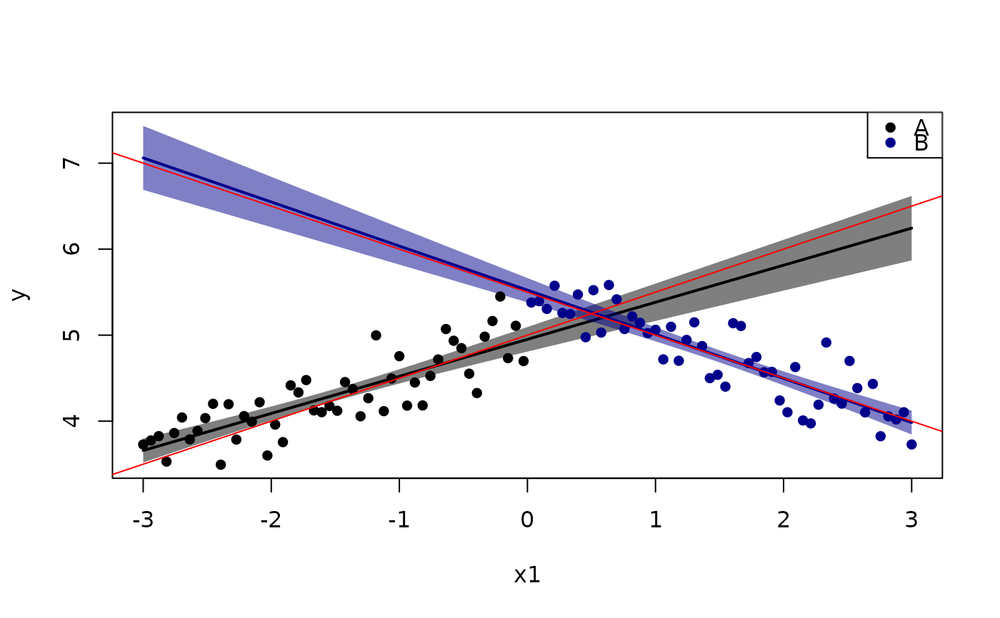
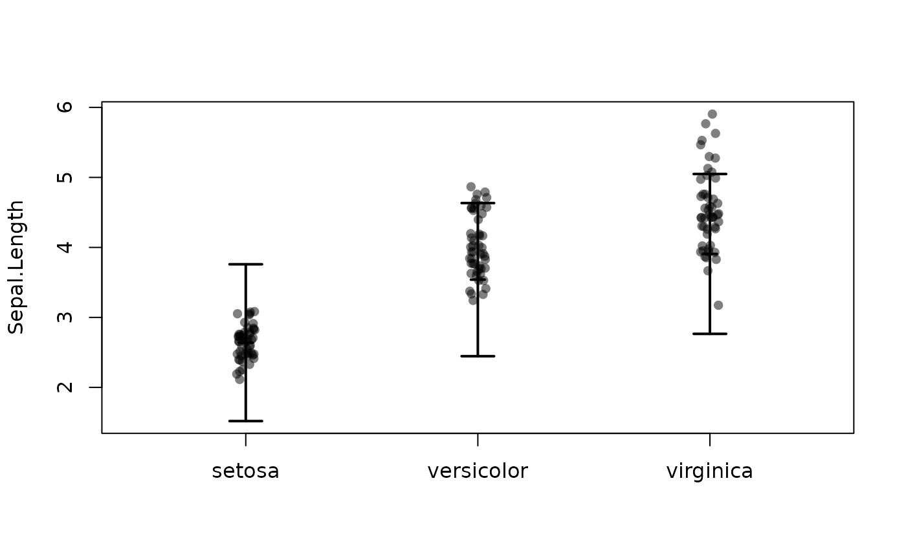

Plot regression line (with interactions) and partial residuals.
Usage
plotConf(
model,
var1 = NULL,
var2 = NULL,
data = NULL,
ci.lty = 0,
ci = TRUE,
level = 0.95,
pch = 16,
lty = 1,
lwd = 2,
npoints = 100,
xlim,
col = NULL,
colpt,
alpha = 0.5,
cex = 1,
delta = 0.07,
centermark = 0.03,
jitter = 0.2,
cidiff = FALSE,
mean = TRUE,
legend = ifelse(is.null(var1), FALSE, "topright"),
trans = function(x) {
x
},
partres = inherits(model, "lm"),
partse = FALSE,
labels,
vcov,
predictfun,
plot = TRUE,
new = TRUE,
...
)Arguments
- model
Model object (e.g.
lm)- var1
predictor (Continuous or factor)
- var2
Factor that interacts with
var1- data
data.frame to use for prediction (model.frame is used as default)
- ci.lty
Line type for confidence limits
- ci
Boolean indicating wether to draw pointwise 95% confidence limits
- level
Level of confidence limits (default 95%)
- pch
Point type for partial residuals
- lty
Line type for estimated regression lines
- lwd
Line width for regression lines
- npoints
Number of points used to plot curves
- xlim
Range of x axis
- col
Color (for each level in
var2)- colpt
Color of partial residual points
- alpha
Alpha level
- cex
Point size
- delta
For categorical
var1- centermark
For categorical
var1- jitter
For categorical
var1- cidiff
For categorical
var1- mean
For categorical
var1- legend
Boolean (add legend)
- trans
Transform estimates (e.g. exponential)
- partres
Boolean indicating whether to plot partial residuals
- partse
.
- labels
Optional labels of
var2- vcov
Optional variance estimates
- predictfun
Optional predict-function used to calculate confidence limits and predictions
- plot
If FALSE return only predictions and confidence bands
- new
If FALSE add to current plot
- ...
additional arguments to lower level functions
Value
list with following members:
- x
Variable on the x-axis (
var1)- y
Variable on the y-axis (partial residuals)
- predict
Matrix with confidence limits and predicted values
Examples
n <- 100
x0 <- rnorm(n)
x1 <- seq(-3,3, length.out=n)
x2 <- factor(rep(c(1,2),each=n/2), labels=c("A","B"))
y <- 5 + 2*x0 + 0.5*x1 + -1*(x2=="B")*x1 + 0.5*(x2=="B") + rnorm(n, sd=0.25)
dd <- data.frame(y=y, x1=x1, x2=x2)
lm0 <- lm(y ~ x0 + x1*x2, dd)
plotConf(lm0, var1="x1", var2="x2")
abline(a=5,b=0.5,col="red")
abline(a=5.5,b=-0.5,col="red")

### points(5+0.5*x1 -1*(x2=="B")*x1 + 0.5*(x2=="B") ~ x1, cex=2)
data(iris)
l <- lm(Sepal.Length ~ Sepal.Width*Species,iris)
plotConf(l,var2="Species")

plotConf(l,var1="Sepal.Width",var2="Species")
if (FALSE) { # \dontrun{
## lme4 model
dd$Id <- rbinom(n, size = 3, prob = 0.3)
lmer0 <- lme4::lmer(y ~ x0 + x1*x2 + (1|Id), dd)
plotConf(lmer0, var1="x1", var2="x2")
} # }